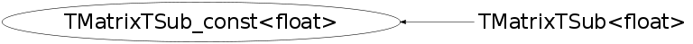

class TMatrixTSub_const<float>
Matrix utility classes. Templates of utility classes in the Linear Algebra Package. The following classes are defined here: Different matrix views without copying data elements : TMatrixTRow_const TMatrixTRow TMatrixTColumn_const TMatrixTColumn TMatrixTDiag_const TMatrixTDiag TMatrixTFlat_const TMatrixTFlat TMatrixTSub_const TMatrixTSub TMatrixTSparseRow_const TMatrixTSparseRow TMatrixTSparseDiag_const TMatrixTSparseDiag TElementActionT TElementPosActionT
This class is also known as (typedefs to this class)
TMatrixTSub_const<Float_t>, TMatrixFSub_constFunction Members (Methods)
public:
| TMatrixTSub_const<float>() | |
| TMatrixTSub_const<float>(const TMatrixTSub_const<float>&) | |
| TMatrixTSub_const<float>(const TMatrixT<float>& matrix, Int_t row_lwb, Int_t row_upb, Int_t col_lwb, Int_t col_upb) | |
| TMatrixTSub_const<float>(const TMatrixTSym<float>& matrix, Int_t row_lwb, Int_t row_upb, Int_t col_lwb, Int_t col_upb) | |
| virtual | ~TMatrixTSub_const<float>() |
| static TClass* | Class() |
| Int_t | GetColOff() const |
| const TMatrixTBase<float>* | GetMatrix() const |
| Int_t | GetNcols() const |
| Int_t | GetNrows() const |
| Int_t | GetRowOff() const |
| virtual TClass* | IsA() const |
| const float& | operator()(Int_t rown, Int_t coln) const |
| virtual void | ShowMembers(TMemberInspector& insp) |
| virtual void | Streamer(TBuffer& b) |
| void | StreamerNVirtual(TBuffer& b) |
Class Charts
{kind=link}
{kind=link}
{kind=link}
{kind=link}

Function documentation
const Element & operator()(Int_t i)